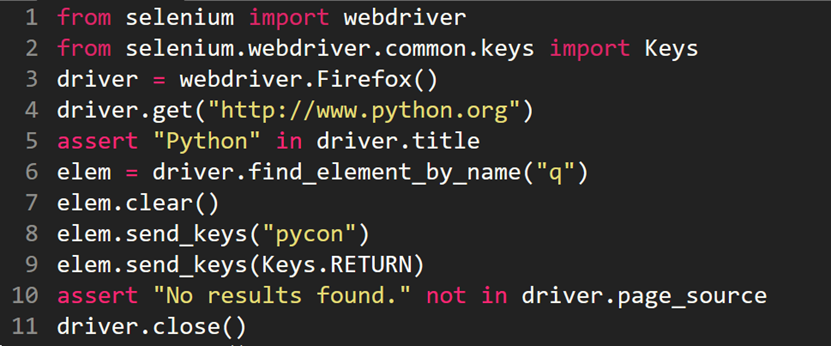
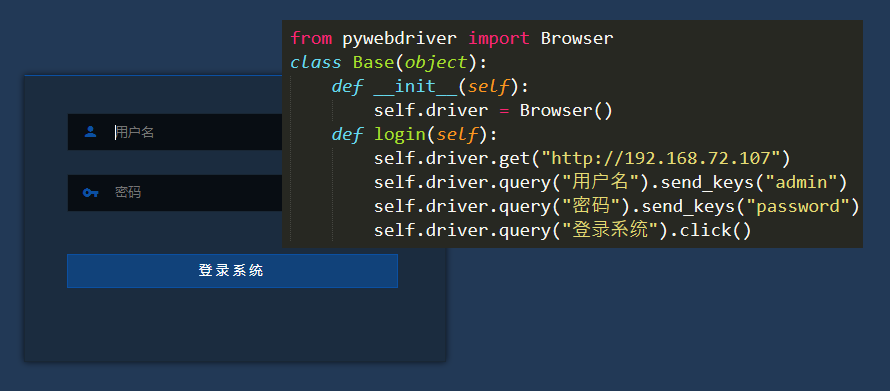
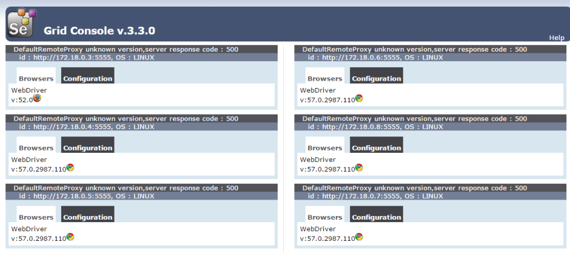
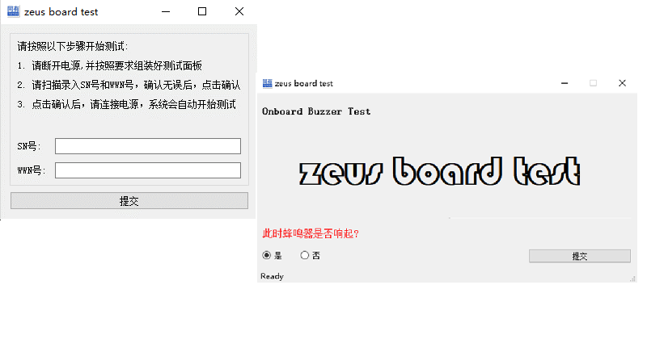
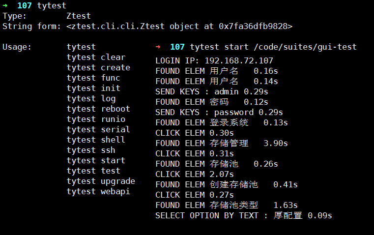
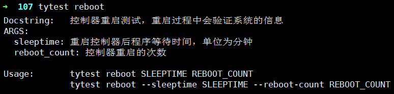
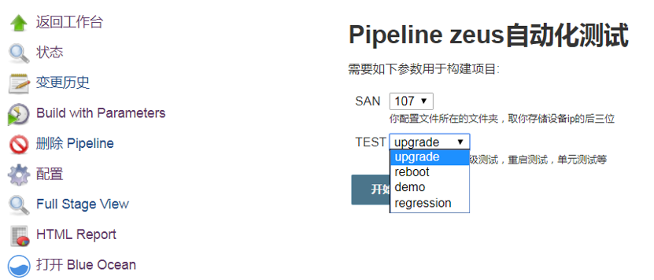
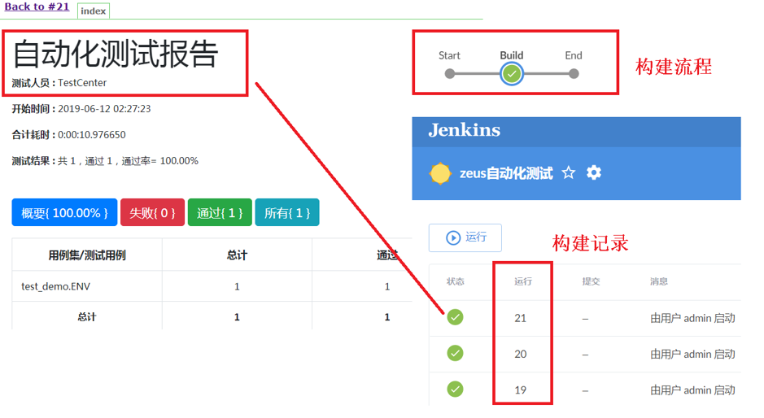
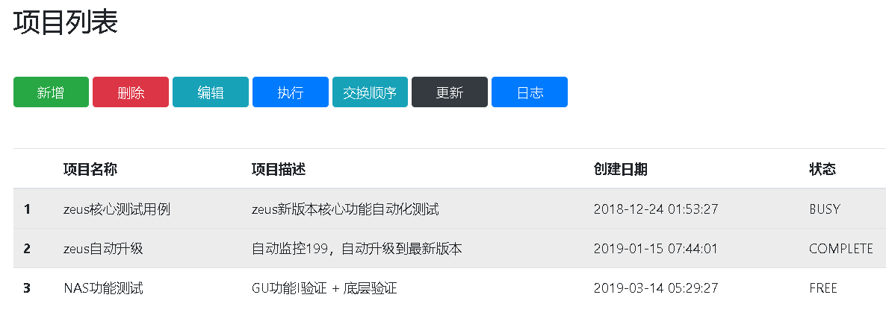
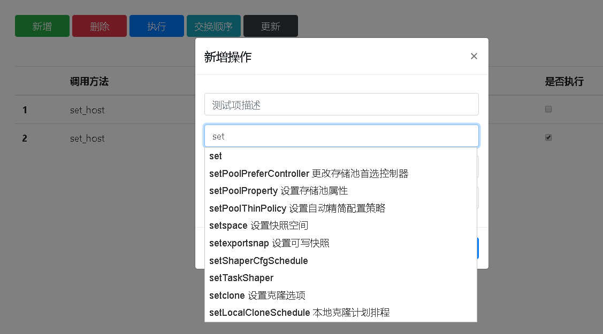

1. GUI自动化测试框架Pywebdriver
1. 传统GUI测试所遇到的问题

selenium作为专业的GUI自动化测试程序，入手简单，然而再实际的测试当中会遇到很多难题:
- 200个测试用例就要写200个测试脚本，脚本量大，一处变动，处处变动，难以维护
- 测试用例中必然存在大量的重复业务操作
- 输入数据的变化，诸如用户名密码等修改要到脚本中修改S
- 页面等待问题，页面未加载完成必然导致脚本操作失败，或者页面加载完成，出现loading弹窗时，进行操作会导致操作失败
- 出现滚动条，页面元素在视屏下方需要操作滚动条后再进行操作
- 如果页面存在iframe，对于iframe内的元素，需要切换到iframe再进行操作
- 使用css或者xpath定位元素，后期维护时需要重新审查页面元素，还原css与页面元素的对应关系，相当于重写用例，维护成本过高
2. Pywebdriver的解决方案

- 框架独创根据页面可见文字定位元素的方法，将页面逻辑于测试用例直观的联系到一起，极大的减少了代码变动导致的后期维护成本和用例编写速度
- 完善页面方法链式调用，并封装重写了页面常用的select，scroll，send_keys等页面方法到链式调用中，减少了对应selenium的学习成本和代码简洁度。
- 框架支持自动切换frame，页面元素自动等待，自动区分可见元素与不可见元素等功能。解决了常用方案中的手动等待和切换frame等繁复操作
- 以框架 - 功能类 - 测试脚本的设计思路设计测试方案，当页面变动时只需修改功能类，无需修改最终自动化脚本，进一步减少测试维护成本
- 基于docker selenium-hub的技术设计测试方案，并经过实践实现了成熟可用的配置方案，以多个浏览器并行测试的测试方案快速完成测试

2.板级测试工具Ztest

ztest是一款用于同有Zeus存储设备的产线自动化测试软件，用于协助产线工人验证产品是否合格。其中所使用的技术如下：
- 使用pyqt5编写测试程序的图形界面，并使用pyinstall将程序封装为exe文件以供产线工人使用
- 使用pyserial库读取串口日志，使用Thread多线程的设计方案分离读，写和工作线程，解决串口日志读取不完全的问题
- 根据正则表达式匹配方验证案串口输出，根据预定义规则验证输出项是否合格以及实现自动化交互
- 使用cryptography库实时加密测试日志，作为档案留存以供日后分享
3. 同有通用测试框架Tytest
独立完成了同有公司通用自动化测试框架Tytest，它包含以下主要功能：
- 使用request提供接口测试，使用pywebdriver提供GUI测试，使用pyexpect提供底层shell验证测试，使用peserial管理验证串口输出日志以及实时交互功能
- 为便于维护，设计时分离功能框架层，业务层与用例层，功能框架层提供测试所需的测试框架，例如pywebdriver以及pyserial；业务层用于封装常用的业务方法，比如登录，存储卷创建，删除等；用例层即自动化测试脚本
- 使用docker技术分发测试版本以及分离测试环境，使用nfs服务挂载共享文件，用于多人协作的配置共享
- 提供简单易用的 cli 命令行接口，用于快速构建测试环境以及执行测试
- 框架自动生成详尽的测试日志以及测试报告，并支持一件上传到文件存储服务器以供数据留存和日后分析


4. 使用jenkins引入敏捷开发与持续集成
- 使用docker-compose的方式构建整个测试环境，包括jenkins，selenium-grid，gitlab，docker-register等
- 使用pipeline的编写jenkins的行为模式，以代码的方式管理敏捷测试行为
- 自动轮询代码仓库，当侦测到代码变动后，则会结合Tytest的cli工具自动升级测试版本并执行测试用例以及生成测试报告
- 添加多台服务器为子节点，保障测试任务的多节点并行测试
- 设计提供易用可配置的测试方法，通过选择不同配置即可进行不同的测试任务


5. ZEUS自动化测试编辑管理系统
- 使用docker封装整个测试环境，实现快速部署
- 使用sqlite作为数据库存储测试用例，使用flask+Bootstrap编写前端界面
- 实时扫描测试业务脚本，输入单词即可自动提示相关函数以及函数参数，实现脚本的快速编写
- 实现测试用例的增删改查，并且点击执行即可执行相关测试用例，并给出运行中，成功，失败等状态提示
- 支持自动化生成测试报告，并且提供详尽的测试日志，根据日志可以快速定位到相关错误原因


6. 其它工作
- 严格按照google python风格指南编写代码，并推广到全体自动化测试组员。保障注释清晰全面，代码易于维护并可快速交接。
- 总结测试开发经验，并输出文章数十篇到wiki库，以及定期举行心得分享会分享个人经验总结到测试组，提高测试组整体自动化测试水平
- 推动自动化测试工具tytest在整个研发中心的使用，协助研发和测试人员使用CLI工具快速构建环境以及执行测试用例，并解决测试框架使用过程中遇到的问题
- 培养自动化测试组员学习使用tytest测试框架以及编写测试脚本，带领组员快速成长